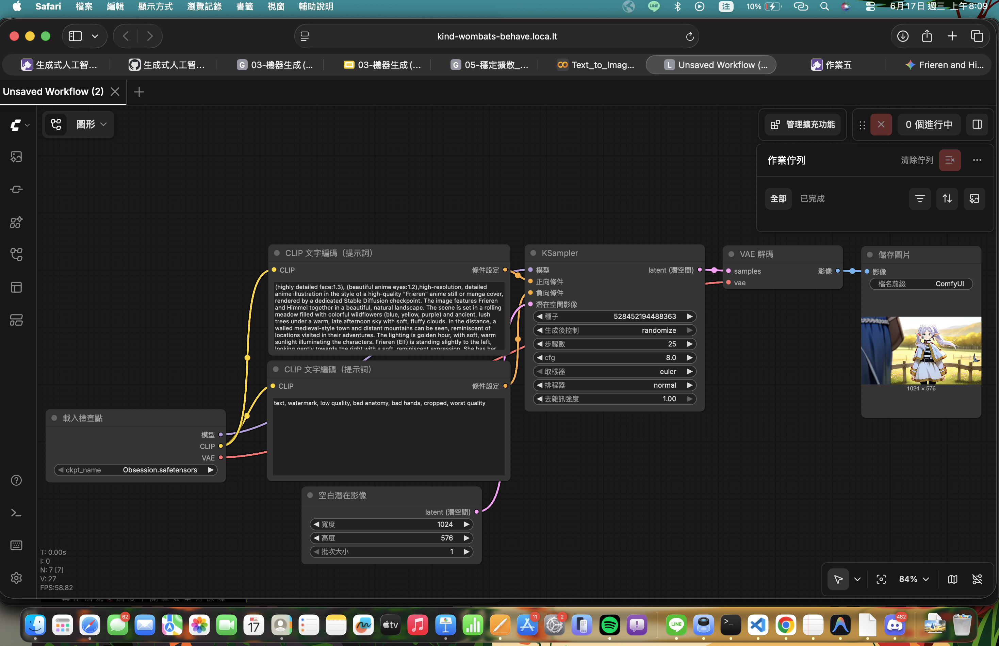
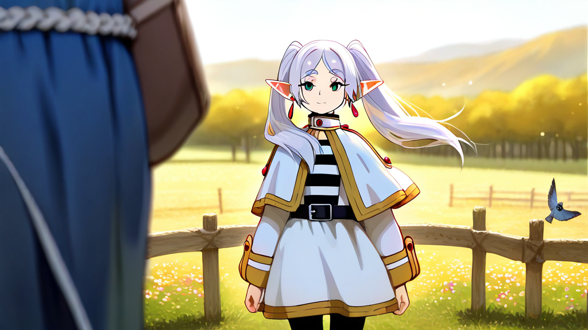

| 總分 | 完成後打勾 | 配分 | 分項描述 |
|---|---|---|---|
| 4 | Simple baseline - 完成ComfyUI建置 | ||
| 4 | Medium baseline - 完成芙莉蓮文生圖 | ||
| 2 | Strong baseline - 替換模型完成欣梅爾文生圖 | ||
| 0 | 完成 100 字心得填寫 |

1024 * 1280
very awa, anime screencap, masterpiece,best quality,1boy, 1girl, frieren, himmel \(sousou no frieren\), outdoors, upper body, eye contact, light blue hair, cape, capelet, earrings, dappled sunlight, day, hand on another's head, kesyeru, sousou no frieren, <,
nsfw,lowres,bad anatomy,bad hands,text,error,missing fingers,extra digit,fewer digits,cropped,worst quality, low quality,normal quality,jpeg artifacts,signature,watermark,username,blurry,artist name,

1024 * 576
high-resolution, detailed anime illustration of Himmel the hero from Sousou no Frieren, handsome young man, short blue hair, blue eyes, wearing a white and blue hero tunic, flowing red cape, a sword sheathed at his waist, gentle and nostalgic smile, beautiful natural fantasy landscape, high quality
text, watermark, low quality, bad anatomy, bad hands, cropped, worst quality